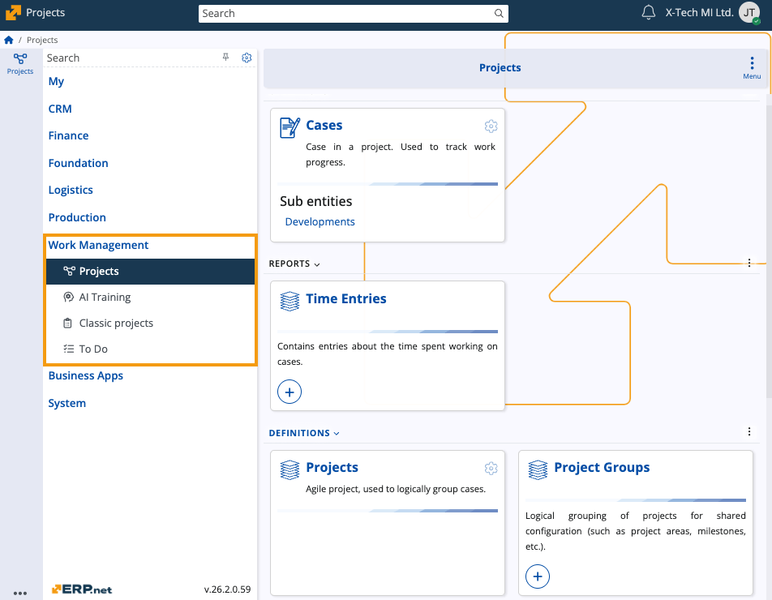

Work Management
The Work Management module is responsible for the organization, execution, and tracking of all forms of operational work within an organization. Its purpose is to centralize the full work lifecycle - from initial definition and planning to assignment, progress monitoring, and completion — into one consistent and interconnected model.

The module supports both structured and unstructured work. It allows you to define standalone To Do tasks, coordinate complex work across teams, manage dependencies, and track actual effort through time entries and work results. It integrates organizational roles, resources, materials, and workflow states, ensuring that every unit of work is linked to the required context and can be followed from creation to closure.
Work Management also provides mechanisms for reporting and auditing work execution. You can capture performed activities, record consumed materials, and maintain historical traces of how work evolved over time.
In addition, Work Management incorporates AI-assisted training tools to support knowledge gathering, structured conversation analysis, and the creation of model training data.
Structure
The Work Management module consists of the following submodules:
- Projects (formerly Agile Project Management)
- AI Training
- Classic projects
- To Do